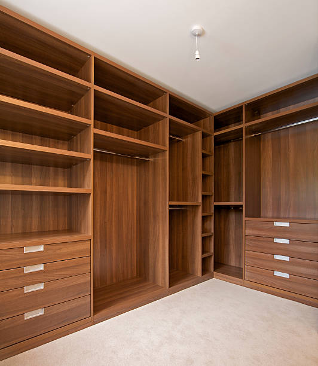
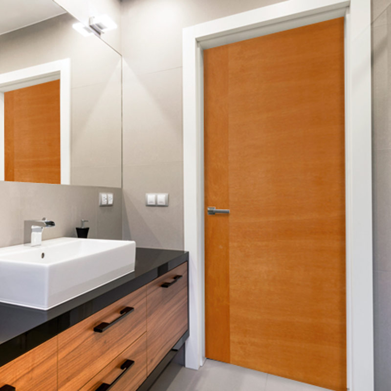
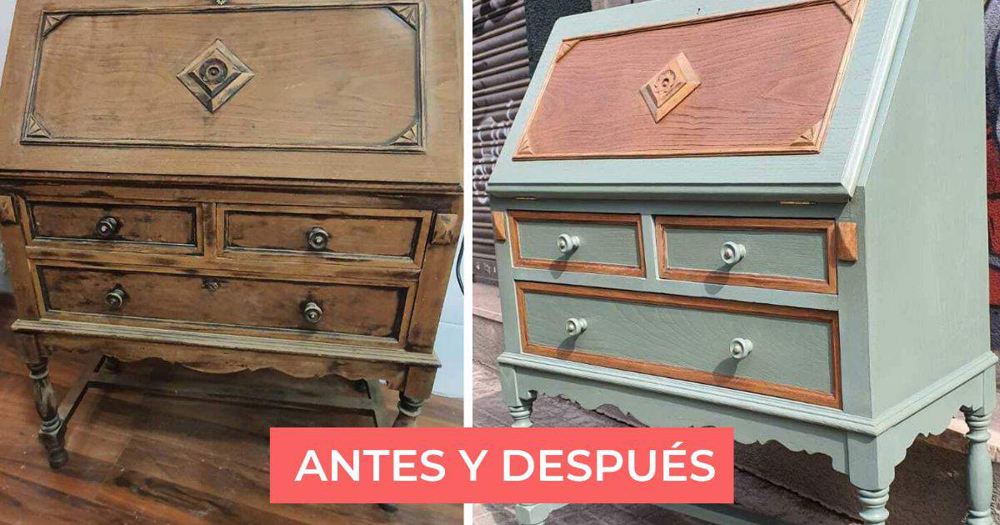
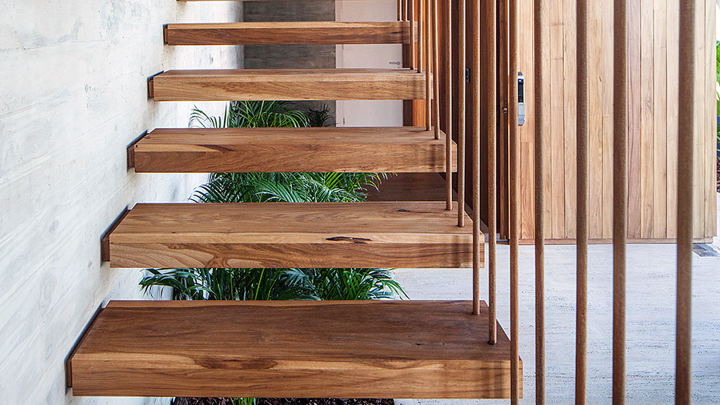
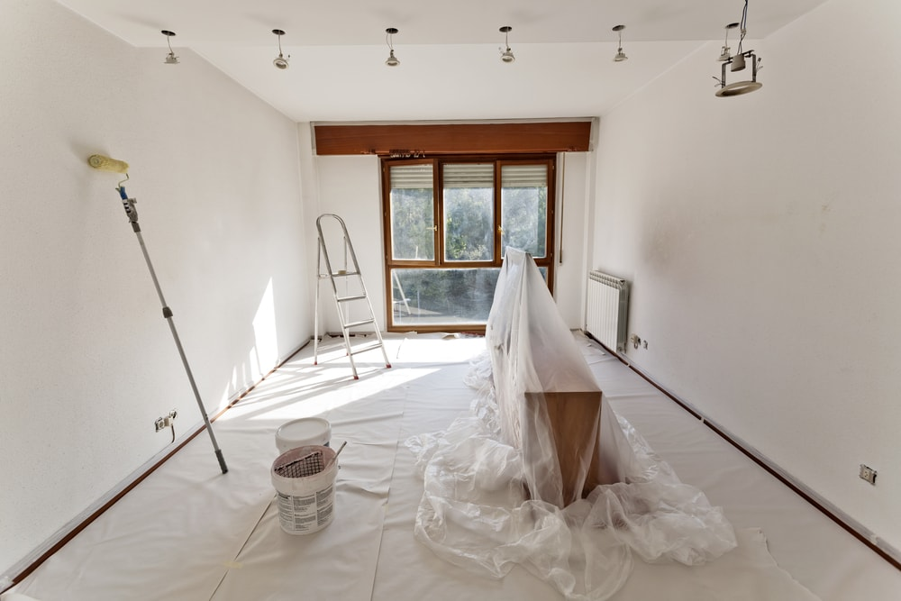

¿Amas a tus gatos pero te preocupa su seguridad en balcones y ventanas? Nuestra Malla
Protectora para Mascotas es la solución perfecta para ofrecerles un espacio seguro y sin
riesgos. Diseñada con materiales resistentes y duraderos, esta malla se instala
discretamente para crear una barrera infranqueable que evita caídas accidentales y escapes,
permitiendo que tus felinos disfruten del aire fresco y las vistas sin ningún peligro.
Closets y Cajoneras a medida

¿Cansado del desorden o de armarios que no se adaptan a tus necesidades? En Rebud your space,
diseñamos y fabricamos closets a medida que no solo optimizan cada centímetro de tu espacio,
sino que también reflejan tu estilo personal y se ajustan perfectamente a tu estilo de vida.
Desde el primer boceto hasta la instalación final, nos comprometemos a crear soluciones de
almacenamiento que combinan la belleza, la durabilidad y la máxima funcionalidad.
Instalación y elaboración de puertas

En Rebud your space, entendemos que una puerta es mucho más que una simple entrada o salida;
es un elemento clave de diseño, seguridad y, sobre todo, tranquilidad. Ofrecemos un servicio
integral de instalación de puertas interiores y exteriores, diseñadas y adaptadas para cada
espacio y necesidad. Desde el estilo contemporáneo y cálido de la puerta que se ve en la
imagen, hasta soluciones más robustas o específicas, nos especializamos en transformar tus
ambientes.
Ya sea que busques maximizar el silencio en un estudio, asegurar la privacidad de una
habitación o simplemente mejorar la estética de tus espacios, nuestras puertas a medida y
opciones de insonorización son la respuesta.
Restauraciones

¿Tienes ese mueble antiguo con valor sentimental que ha perdido su brillo? ¿O quizás
una pieza de madera única que merece ser rescatada del olvido? En Rebud your space,
somos artesanos apasionados por devolver
la vida y el esplendor a tus artículos de madera. Como puedes ver en la imagen,
transformamos piezas desgastadas en verdaderas obras de arte, combinando técnicas
tradicionales con acabados modernos.
Nuestro servicio de restauración no solo repara daños y embellece la superficie,
sino que también rescata la historia y el carácter de cada objeto, adaptándolo a tu
estilo y necesidades actuales.
Diseño de interior

En Rebud your space, creemos que tu hogar es
un reflejo de tu esencia. Nos dedicamos a crear espacios que no solo son
estéticamente impresionantes, sino también altamente funcionales y que vibran con tu
personalidad. Desde la concepción de un nuevo ambiente hasta la restauración y
revitalización de elementos existentes, nuestro equipo experto está listo para
materializar la casa de tus sueños.
La imagen es un ejemplo de nuestra filosofía: un diseño interior que fusiona la
calidez de la madera natural en escaleras flotantes y elementos verticales, con la
simplicidad elegante de los acabados modernos, creando un flujo armónico y una
atmósfera acogedora. Nos especializamos en maximizar la luz, optimizar la
distribución y seleccionar materiales que aporten durabilidad y sofisticación.
Remodela tu espacio

¿Necesitas un cambio de aire en tu hogar o en tu negocio? En Rebud your space, somos
expertos en transformar ambientes a través
del poder del color y la calidad de un acabado profesional. La imagen muestra
nuestra dedicación: cada proyecto se aborda con la máxima preparación, protegiendo
tus muebles y pisos para garantizar un resultado impecable y una experiencia sin
preocupaciones.
Ofrecemos un servicio completo de pintura que abarca desde la preparación meticulosa
de superficies hasta la aplicación de las capas finales, tanto en el interior como
en el exterior de tu propiedad en Medellín y Antioquia. Ya sea que busques refrescar
una habitación, cambiar radicalmente la atmósfera de tu casa o proteger y embellecer
la fachada, somos tu aliado ideal.